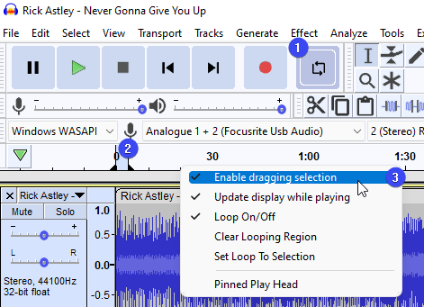

Tutorial - Looping
Contents
1. Enable Playback Looping
- 
To enable playback looping:
- Click onto the button (1). When you do this, you'll note the looping region appear in the timeline (2).
- You can move the region and it's in and out point individually by dragging it.
- Additionally, you can right click the timeline and (3). This will come in handy later.
- Press button to pay the loop.
2. Finding the looping region
When making a loop out of music, you often will be able to see repetitions in the waveform as your source material will probably contain some loop already (for example a drummer playing the same beat throughout the song). You can use these to roughly find good looping regions and position your looping region above it.
- If you're having trouble finding a good region with a stereo track, you may want to convert it to mono first:
- When positioning your looping region, try to aim just before the peaks. Doing that may allow you to skip finetuning altogether.
- You can adjust the looping region even when playback is on.
Fine-tuning the loop and removing clicks
To make the loop seamless, you may need to zoom in some more, using Ctrl+Scroll (Cmd+Scroll) or the zoom controls.
| Set your looping points at a zero crossing, where the waveform (blue line) crosses 0 (black line):
|

3. Turn your loop into a clip
If you had dragging selection enabled (see Step 1.3), you now can simply (Ctrl+I, ⌘+I). You can copy-paste this clip anywhere in your project.
4. Exporting Loops
The selection may be exported using and choosing Current Selection.
| Export Formats
The lossless PCM WAV format is the best format for loops. Choose "WAV (Microsoft) signed 16-bit PCM" when exporting. Many lossy, size-compressed formats like MP3, WMA and ADPCM WAV suffer from added silence at the the start or end of the file or other issues that do not respect the exact length. Seamless loops should normally be exported in a lossless format such as WAV. Note that seamless loops should NOT be exported in MP3 format because encoder/decoder overall delay is not defined, which means there is no official provision for gapless playback. If a compressed file format is required, try OGG Vorbis (though understand that because OGG Vorbis is a lossy format, the encoded audio is not exactly identical to the original audio). OGG Vorbis loops will generally perform acceptably provided that the start / end of the loop are at zero crossing points. |
Find Loops Online
| Finding free loops created by others
Try:
|